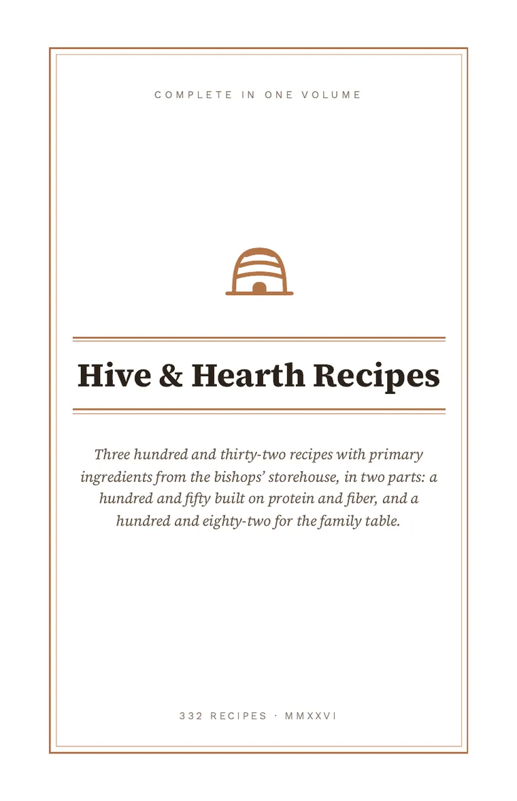
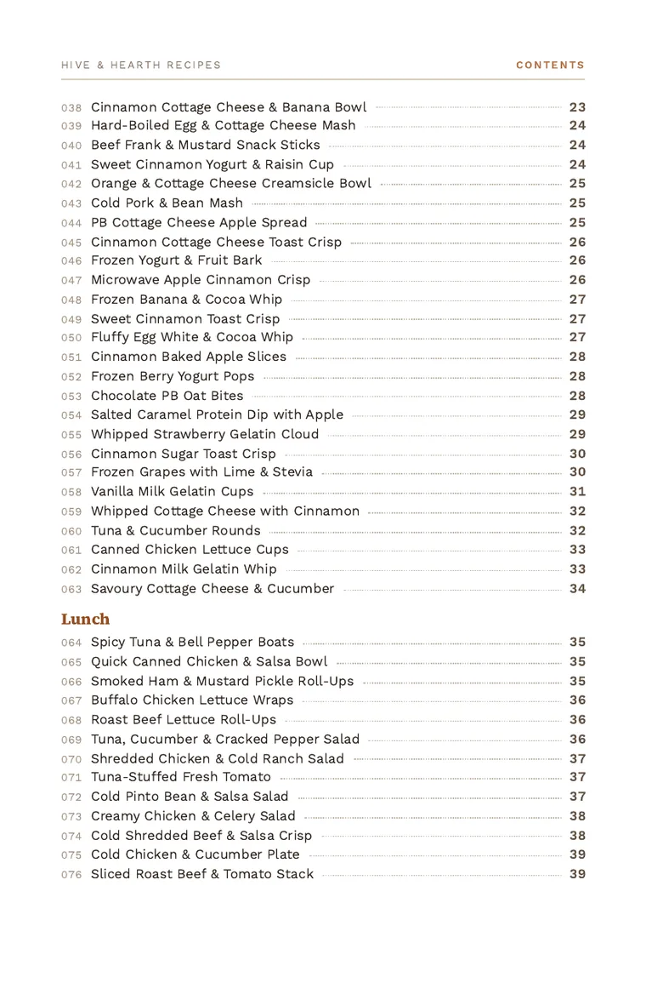
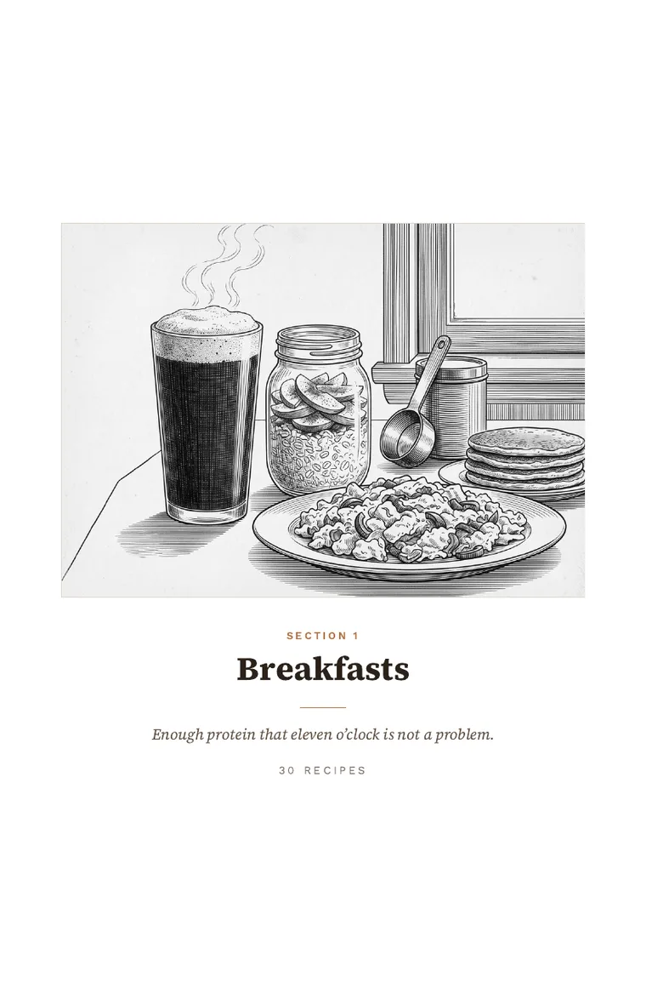
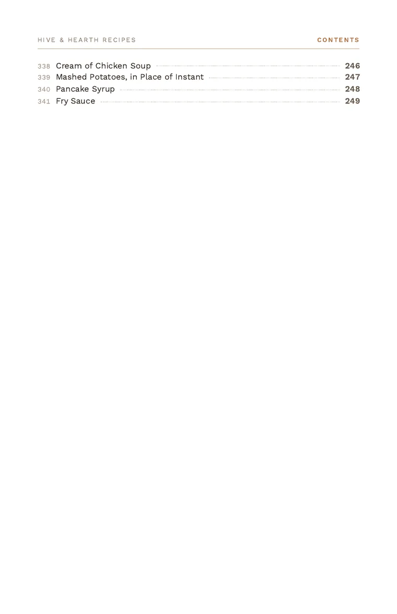
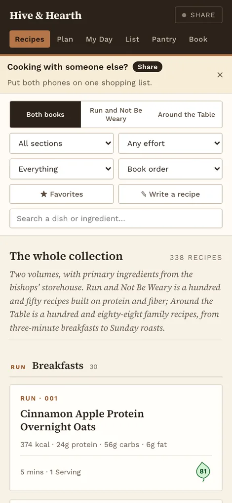
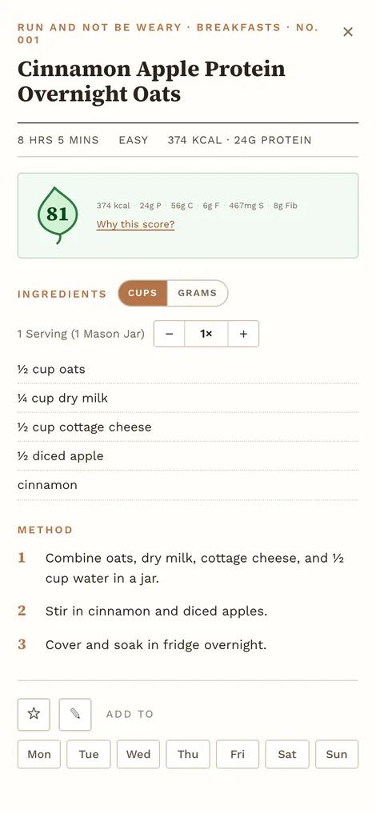
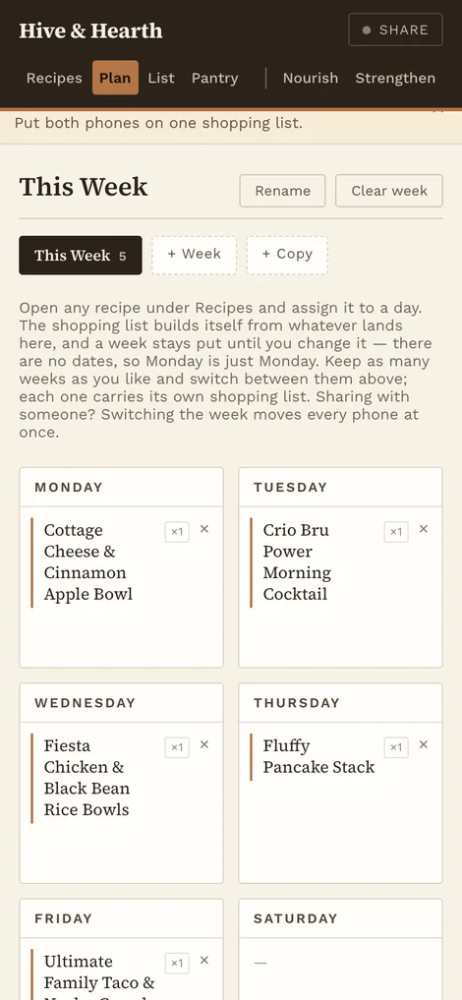
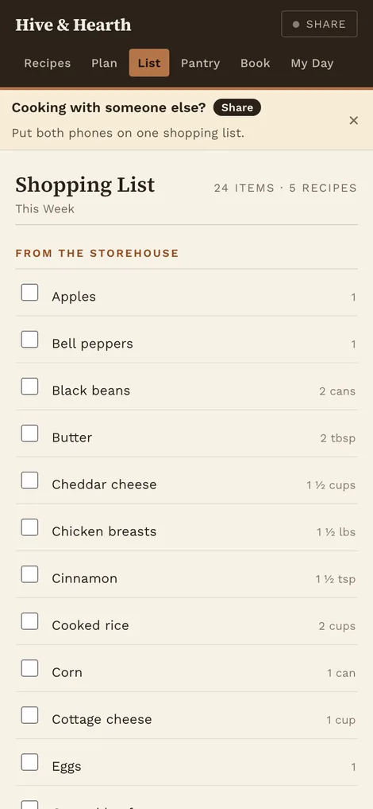

266 recipes built mostly from what the Bishops’ Storehouse carries. Pick one, plan a week, and the shopping list writes itself — on your phone or as a printed book.
Free. No account. Works with no signal.








The same 266 recipes, either way — or order it printed, $50
Filter by effort or by what you’d have to buy. Scale any recipe up to eight times and get fractions back, not decimals. Plan a week — it just stays planned, no dates to expire. The list builds itself and adds duplicates together, so three recipes wanting cottage cheese come out as one line: 2⅛ cups.
It starts as the storehouse order sheet. Take things off as you stop keeping them, and every recipe updates what it says you’d need to buy — the part that keeps this useful after you stop going.
Half-letter, with a contents page and proper typesetting. No recipe is ever cut in half by a page break, and the files are rendered ahead of time, so there’s no print dialog to argue with about paper size.
Install it from the page — Safari: Share → Add to Home Screen, Chrome: ⋮ → Install app — and it keeps working in a storehouse basement with no bars. Two people can share one list: tap the badge on one phone, type the code into the other, and favorites, weeks and the grocery list stay the same on both.
All 266 recipes, 160 pages, spiral bound and posted to you for $50 — or download it and print it yourself, free.
Or take it as two booklets you fold and staple yourself. Run and Not Be Weary is 100 recipes over 52 pages (PDF · imposed for folding). Around the Table is 166 over 112 (PDF · imposed for folding). The imposed files are deliberately out of page order, so don’t hand one to a copy shop for spiral binding.
We’re using the bishops’ storehouse right now. That’s not a comfortable sentence to put on a public page, but it’s the whole reason this exists. The order sheet is a fixed list, and eating well off a fixed list takes more planning than most weeks have room for.
So I built it for us: recipes that lean on what’s actually on that sheet, a week you plan once, and a shopping list that only asks you to buy the things the storehouse doesn’t carry. My wife and I run it off one shared list across two phones. It worked well enough that I typeset the whole collection, had it printed and bound at a copy shop, and put it here.
It costs you nothing, and it isn’t going to. The app is free, both books are free, the source is public. That’s not a strategy — it was built by somebody who couldn’t have paid for it either, and I’d rather you had it than paid for it.
I’m also trying to bring some money in, and I’d rather say so plainly than dress it up. If this saved you an afternoon or a trip and you’re able to, anything you send goes straight to my family and I’m grateful for it. But three verses on from the one above: “it is not requisite that a man should run faster than he has strength.” Please don’t give out of your own need. Take the book.
$8 is about what one book costs me to print and bind; $40 is about a week of the things the storehouse doesn’t stock. All three open the same page and you type the amount, so they’re suggestions rather than tiers. Or just open the app.